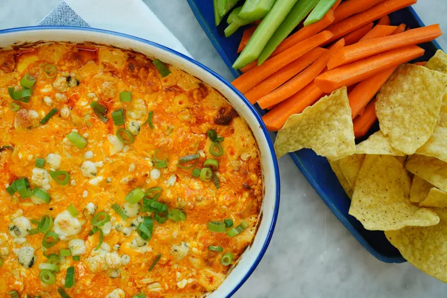

Buffalo Chicken Dip

Ingredients:
- 3 skinless, boneless chicken breast halfs
- 1 teaspoon kosher salt
- 1/2 teaspoon ground black pepper
- 1/4 teaspoon garlic powder
- cooking spray
- 2 (8 ounce) packages cream cheese, softened
- 1 cup ranch dressing
- 1 cup hot sauce
- 1 1/2 cups shredded cheddar cheese
- 1/3 cup crumbled blue cheese
- 3 stalks green onion, green parts only, thinly sliced
Steps:
- Preheat the oven to 350 degrees F (175 degrees C).
- Place chicken onto a large sheet of foil and sprinkle evenly
with salt, pepper, and garlic powder. Wrap foil around chicken
to form a pouch, sealing it around the edges. Place foil pouch
onto a rimmed baking sheet.
- Bake in the preheated oven for 1 hour. Remove from the oven and
let stand for 15 minutes to cool slightly.
- Meanwhile, increase the oven temperature to 375 degrees
F (190 degrees C). Lightly grease a baking dish with cooking spray.
- Stir together cream cheese, ranch dressing, and hot sauce in a large
bowl until well combined.
- Roughly chop or shred cooked chicken. Add to cream cheese mixture along
with Cheddar cheese; stir to combine. Pour mixture into the prepared
baking dish and sprinkle with blue cheese.
- Bake, uncovered, until bubbly and golden around the edges, about 30 minutes.
Remove from the oven and let stand for 10 minutes. Sprinkle with green onions and serve.